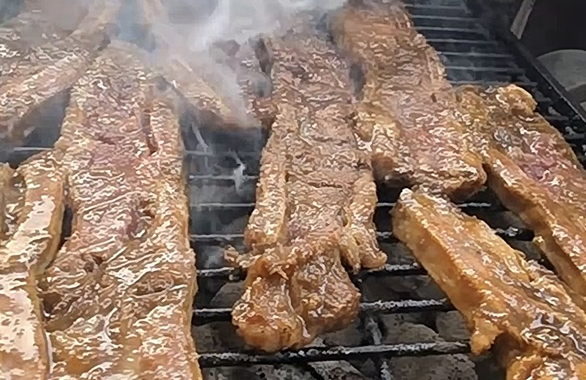

Barbecue Taught Me Control. Choma Taught Me Restraint.
Food Culture Essay · Road to Kisumu Series
When I was introduced to nyama choma I didn't see something foreign, I saw something familiar, doing the same job as the style of BBQ I'm used to, but with a completely different set of rules. I've spent years around fire. Long nights feeding wood into an offset smoker, chasing temperatures that drift the moment you look away. Twelve hours with a single cut of meat, adjusting vents by feel, building flavor layer by layer, because that's what American barbecue is, patience, control, the belief that if you tend a fire long enough you can turn something tough into something tender and unforgettable. So when I started paying real attention to nyama choma, which is roasted meat in Swahili, I recognized the equation immediately. Meat and fire. That's it, at the surface. What I didn't expect was that the answer would be the opposite of mine.
I should say where I'm standing. I haven't worked on a jiko. I haven't spent a Sunday turning cuts of goat or beef for a crowd in Nairobi or on a lakeshore outside of Kisumu. What I have is twenty years of knowing exactly how hard the thing is that those cooks are doing, which is its own kind of qualification. Craft recognizes craft, even across an ocean. Even from way over here I can see the shape of it without the habits that come from being inside. The first thing that stands out is the absence. No heavy rub. No overnight marinade doing half the work before the meat sees heat. No sauce waiting at the finish line to carry the flavor home.
The seasoning is usually kept simple: oil as a binder, then salt, pepper, maybe some crushed garlic and rosemary. The meat itself does the rest. Warm salt water is brushed or sprayed on throughout the cook to keep it moist and add some flavor. Salt water. One ingredient, applied continuously. Not a shortcut. A position, settled long before I showed up, that what comes off the fire should taste like itself. In my world, we build flavor. In choma, they refuse to hide behind it.
Charcoal or wood, almost always. Gas exists and gets used, but nobody argues it's better, and on that point the two traditions agree without needing to say it. Fire has to breathe. You don't get that from a knob and a propane tank. Where the philosophy splits is in how the fire gets used. Back home I'm working indirect heat, low and slow, two twenty five, maybe creeping to two seventy five if I'm pushing it. Hours and hours. The goal is transformation. Break down collagen, render fat, let smoke settle deep until the meat becomes something else entirely. Choma doesn't do that. The meat sits over the coals directly, turning steadily, watched close. An hour, give or take, depending on the cut. But it isn't the blast furnace you might imagine from direct heat. Cooks bank ash over the coals to hold the temperature down and stop the fat flare ups from scorching one side while the other lags. Bone in cuts and good marbling are the choice because that's what survives the heat at that distance. It comes off well done, and it's supposed to, with a layer of char. That char isn't a mistake anyone's correcting. It's the whole idea.
The smoke is still there, but it isn't what you're tasting. It rises off fat hitting coals and folds back into the meat as it goes. Honest smoke, a byproduct of the moment rather than something engineered over a shift. Which is where I had to catch myself. If you walk into this thinking you'll improve it, add a rub, extend the cook, dial it into your system, you've already missed the plot. The skill isn't in how much you can do. It's in how much you're willing not to. In barbecue you have time. You have technique, you have tools, you have room to correct a bad start slowly and build your way out of it. Over choma coals there's you, the meat, and the heat. You respect it or you ruin it, and everyone finds out within the hour.
If American barbecue is about addition, layering flavor, managing time, turning a cut into something new, then nyama choma is about subtraction. Confidence. Knowing when enough is enough and stepping back before you cross the line. Same equation. Different answers.
The more I sit with it, the more the two look like relatives rather than opposites. Both come from people gathering around fire. Both make cooking an event instead of a task. The difference is where the attention goes. Barbecue produces names. Competition circuits, signature styles, a person whose reputation is the product, the fire becomes a stage, and the pitmaster stands on it. Choma produces a cook nobody asks about. The order is a gesture and two words. You pick the cut off the hook, hand it over, and an hour later it comes back done. The skill is total and the authorship belongs to no one. You see it in how it's eaten, too. Meat chopped after cooking and piled on a wooden board. Kachumbari alongside, bright and sharp, cutting the richness. Ugali often there anchoring the whole thing. No plates necessary. Hands doing the work. Conversation fills the space between bites and nobody's rushing.
Kisumu, on Lake Victoria, where none of this is theory. It's Sunday afternoon. It's smoke in the air before you see the fire. And the lake adds its own layer, tilapia and Nile perch straight out of the water, hitting the same coals as goat and beef. Same philosophy, different protein. Freshness carries the weight and fire finishes the job.
The restaurant I'm planning won't choose between these traditions. It'll sit at the intersection. I know what I bring to a fire. Years of understanding how heat moves, how meat reacts, how to hold a cook steady when it wants to drift. But I'm stepping into a place where control isn't the highest value. Restraint is.
So the question was never how I put my stamp on choma. It's whether I can cook goat without trying to turn it into brisket. Whether I can let lake fish speak instead of dressing it up like it needs help. And there's a harder version of that question I keep circling. I'm planning a restaurant with my name on it, me standing behind it, in a tradition where the cook isn't supposed to be the point. Barbecue taught me to sign my work. Choma doesn't sign anything. I don't have that one worked out yet.
— Chef Dumela